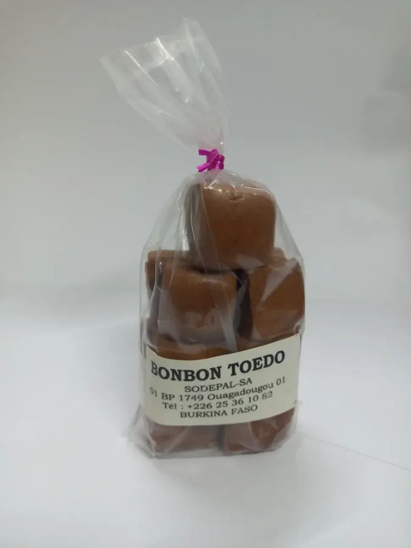

Certifiée NBF
Certifiée NBFMaïs
Vitaline lactée biscuitée
Farine infantile lactée au maïs, enrichie en vitamines et protéines.
50 g · 100 g · 400 g · 500 g · 1 kg
Farines infantiles enrichies, biscuits, confiseries, pâtisseries et Bessé : une gamme fabriquée à Ouagadougou à partir des ressources du Burkina Faso.
Catalogue
Certifiée NBFFarine infantile lactée au maïs, enrichie en vitamines et protéines.
50 g · 100 g · 400 g · 500 g · 1 kg
 Certifiée NBF
Certifiée NBFPréparation rapide pour les repas de bébé, riche en vitamines et protéines.
50 g · 100 g · 400 g · 500 g · 1 kg
 Certifiée NBF
Certifiée NBFFarine lactée au petit mil, céréale traditionnelle du Sahel.
50 g · 100 g · 400 g · 500 g · 1 kg
 Certifiée NBF
Certifiée NBFLa version instantanée de notre farine au petit mil.
50 g · 100 g · 400 g · 500 g · 1 kg
 Riche en vitamines
Riche en vitaminesBiscuit au moringa à la saveur remarquable, très riche en vitamines et oligo-éléments.

Une saveur particulière, pour le goût et le plaisir.

Un croustillant salé, idéal pour l’apéritif.

Naturel et plein d’énergie.
Des pièces montées à votre image, réalisées par nos pâtissiers.
Anniversaires, baptêmes, événements d’entreprise : décrivez-nous votre idée.
Pour vos réceptions familiales et événements d’entreprise.

Liqueur de miel unique, à boire fraîche avec des glaçons ou du tonic.
L’abus d’alcool est dangereux pour la santé. À consommer avec modération.
Un produit de la gamme Vita à base de soja, légumineuse riche en protéines.
Une spécialité SODEPAL à base de céréales locales.
Une préparation rapide inspirée d’une spécialité burkinabè.
Des biscuits à base de soja, issus de notre savoir-faire en biscuiterie.
La pulpe du fruit du baobab, en poudre.
Bon à savoir
Enrichies en protéines, vitamines et minéraux, elles apportent les éléments nécessaires à une croissance harmonieuse de l’enfant.
Cinq formats — 50 g, 100 g, 400 g, 500 g et 1 kg — pour les familles comme pour les revendeurs et les structures de santé.
À conserver dans un endroit aéré et sec. Nos farines sont certifiées NBF et produites selon les règles HACCP.
Pâtisserie sur commande
Que ce soit un événement familial ou d’entreprise, faites confiance au talent de nos pâtissiers. Indiquez-nous la date, le nombre d’invités et vos idées.